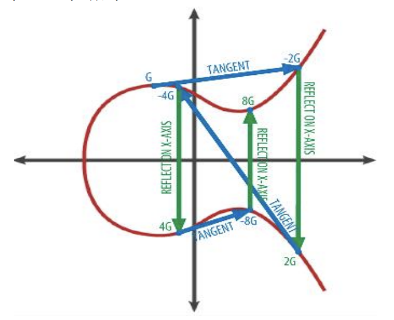

ECDSA (Elliptic Curve Digital Signature Algorithm)
타원곡선암호(ECC)를 전자서명에 접목시킨 암호 알고리즘.
타원곡선의 정의
일반적으로 타원 곡선 방정식은 아래와 같다.
y2 + b1xy + b2y = x3 + a1x2 + a2x + a3
그러나, 실수상의 타원 곡선은 아래와 같은 특별한 타원 곡선을 사용한다.
y2 = x3 + ax + b

타원곡선의 특징은 x축을 중심으로 대칭되며, 비 수직선에 대해 최대 3개 지점에서 곡선과 교차.
타원곡선상의 연산
타원곡선상의 점 P와 Q의 덧셈연산은 P와 Q를 지나는 직선이 타원과 만나는 교점(-R)을 x축으로 대칭시킨 점 R에 대해
P + Q = R
로 정의한다.

타원곡선 암호화 원리 및 키생성
타원곡선에은 임의의 정수 a, b에 대해 정의된 다음과 같은 방정식의 해 (X, Y)의 집합이다.
Y2 = X3 + aX + b (mod p)
점 p=(x, y)가 타원곡선상에 있다는 것은 위의 방정식을 만족시킨다는 의미이다. 또한, 두 점 P, Q와 임의의 정수 x에 대해 다음과 같은 방정식을 정의할 수 있다.
Q = xG
타원곡선 이산대수 문제는 위와 같은 상황에서 해 x를 구하는 것이다. 이로부터 타원곡선 암호에서 사용하는 키 쌍은 다음과 같이 정의할 수 있다.
G: 생성자. 임의의 시작포인트
x: 개인키. p보다 적은 소수(prime)로, 난수 생성기로 생성.
Q: 공개키. 개인키로부터 연산.
이 때, 공개키 Q는 Q = xG = G+G+G+…+G(x번 덧셈) 한 값이다.
Q = xG 수식에서 x와 G를 이용해 Q를 구하기는 쉽지만, G와 Q를 이용해 x를 구하기는 힘들다.
G는 타원곡선상 임의의 점이며, xG는 G를 타원곡선상에서 x번 덧셈 연산한 것을 의미한다.

2G=G+G 는 점 G에서 점 G에서의 접선이 타원곡선과 만나는 제 3의 점을 x축으로 대칭시킨 점이다. 4G=2G+2G 는 2G의 점에서 마찬가지로 접선을 그어 타원곡선과 만나는 점을 x축으로 대칭시킨 점이다. G의 상수배 연산은 이를 반복적으로 수행하여 표현한다.
블록체인에서의 타원곡선 암호(ECDSA)
블록체인 기반 기술에서는 키 쌍 생성시 타원곡선 알고리즘을 사용하며, 키 길이는 256비트 이상을 사용한다. 비트코인의 경우 미국국립표준기술원(NIST)에서 개발한 secp256k1 표준에 정의된 타원곡선을 사용한다. secp256k1은 표준으로 제정된 elliptic curve를 만들기 위한 상수 집합이다.
참고로 NIST에서는 secp256r1을 추천하고 있다. 비트코인에서 secp256r1 대신 secp256k1을 사용한 이유는 여러가지 추측이 있지만, 속도 때문이라는 이유가 타당하다고 여겨진다.
secp256k1이란 이름은, sec(Standard for Efficient Cryptography) + p(Paramter p over Fp) + 256(Field size p의 bit수) + k(Koblitz curve 변형) + 1(sequence number) 로 구성. r은 Random parameter를 의미한다.
secp256k1의 경우, a와 b의 값이 a=0, b=7로 정해져 있어
y2 mod p = (x3 + 7) mod p
의 타원곡선 수식을 사용한다.